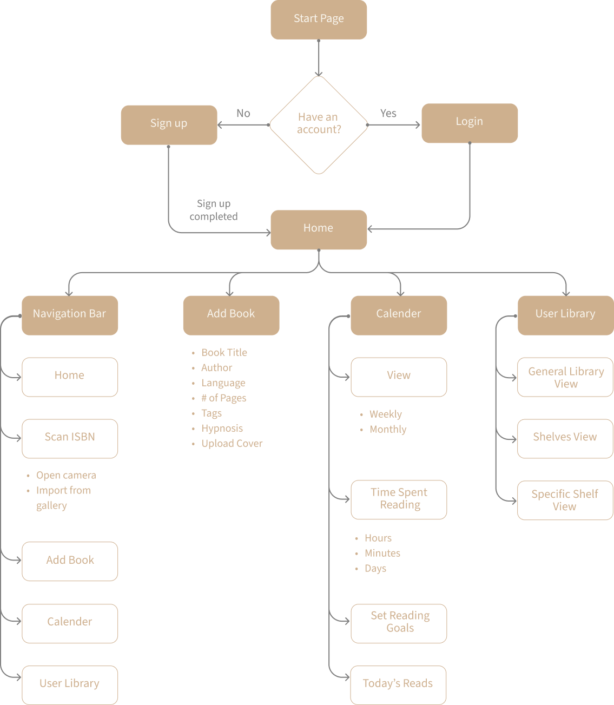
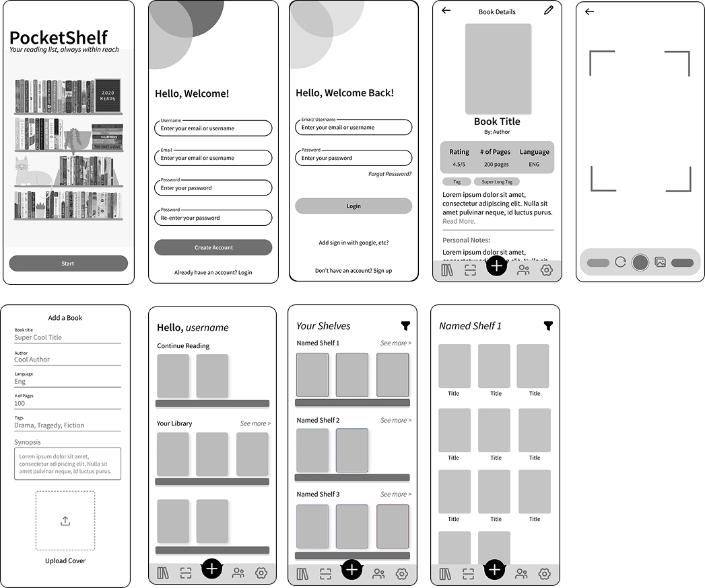
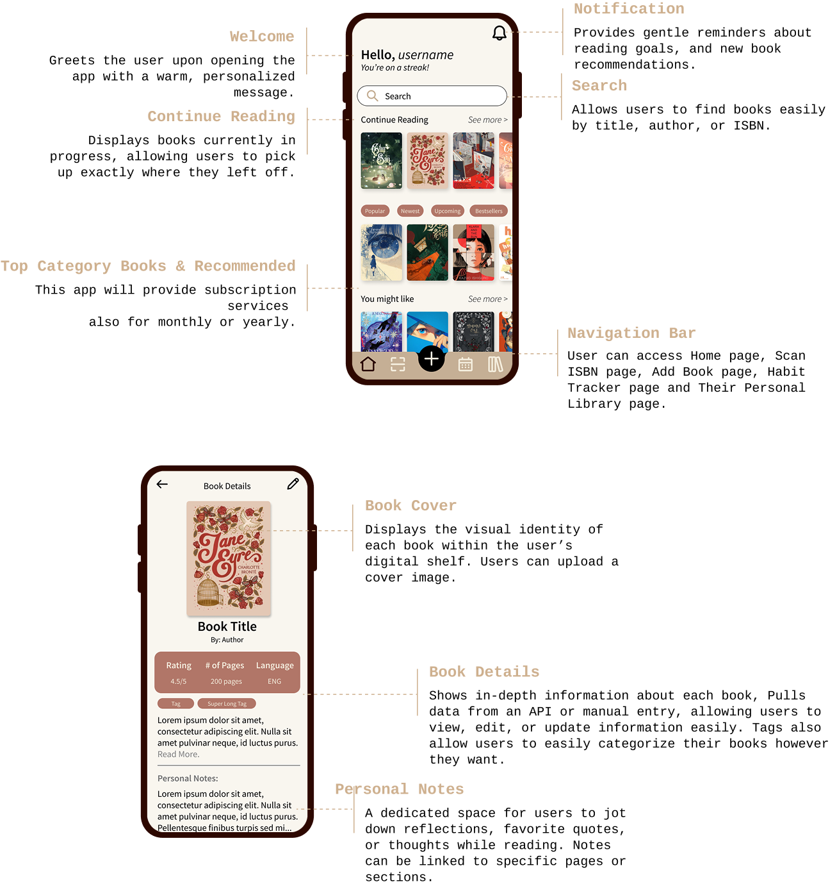
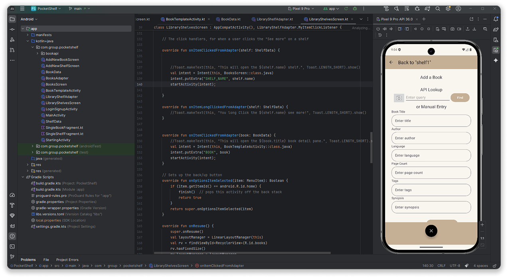
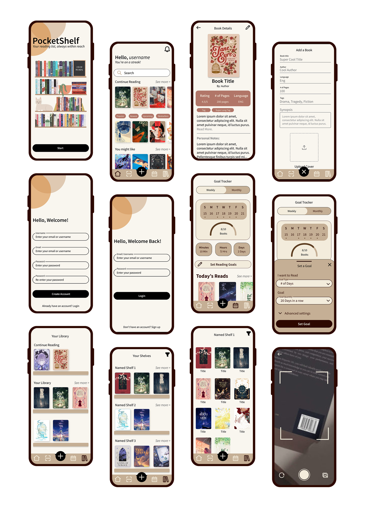

A mobile reading tracker that makes it easy to log, organize, and reflect on your reads.

Many readers struggle to keep track of what they've read, what they want to read next, and what they've taken away from those books. Tools already out there often feel overly social, rigid, or transactional — prioritizing completion metrics over personal meaning.
"How might we design a mobile experience that supports organization and reflection — treating books as meaningful, not just items to check off?"
Through early exploration and analysis of existing reading apps, four core needs shaped the design direction.
Rather than designing PocketShelf as a social platform, we centred it around three core areas and a small number of high-impact flows.
Focusing on these flows helped ensure every screen had a clear purpose — making the app intuitive to build and to use.
I mapped out the core user flows before touching the UI — making sure the navigation and key interactions were clear and purposeful.

I explored layout and hierarchy through low-fidelity wireframes, prioritizing visual browsing over text-heavy lists, clear entry points into individual books, and minimal UI to reduce distraction.
These were presented to peers and instructors to gather early feedback on app ideas and features.

Problem Most reading apps feel cold, clinical, or social-media-like — at odds with the calm activity of reading.
Decision Soft colour palettes, gentle typography, and generous whitespace to create a reading-adjacent aesthetic.
Why it works Visual tone directly affects how an app feels to use. A calm design supports calm behaviour.
Problem Streak counters and completion metrics create anxiety and shift focus from reading enjoyment to app engagement.
Decision Tracking is available but never emphasized. Status is informational, not performative.
Why it works Removing pressure mechanics lets users engage with the app on their own terms and pace.
Problem Most trackers present books as rows in a database — no sense of the individual book as an object.
Decision Each book has its own space with cover, notes, and memories — making the collection feel like a real shelf.
Why it works Readers think about books individually. The IA mirrors that mental model.
Problem Logging a book or capturing a thought should take seconds, not require navigating a complex interface.
Decision Core actions are reachable in one or two taps. The layout prioritises thumb-zone accessibility throughout.
Why it works Fast access encourages consistent use — the app fits into reading habits rather than interrupting them.

After finalising the design, the app was implemented in Android Studio as part of the course. Seeing the designs translated into a working application helped validate interaction decisions and revealed opportunities for further refinement.


PocketShelf taught me how to lead design decisions within a team context — advocating for user experience choices while staying grounded in what was technically feasible to build. The gap between wireframe and implemented app was instructive, revealing where design assumptions held up and where they needed rethinking.
"Design for the feeling first. The features follow."
Designer, Developer · Academic Project